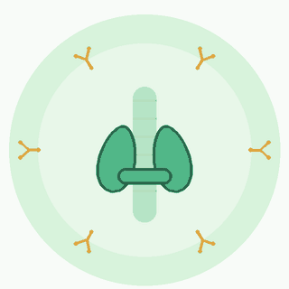
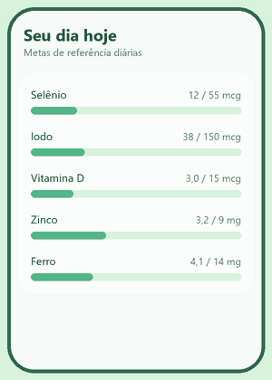

Com menos hormônio, as células produzem menos energia. O cansaço tende a não passar mesmo depois de uma boa noite de sono.
TCC · Saúde e nutrição
Tireoidite de Hashimoto: quando o corpo ataca a própria tireoide
A causa mais comum de hipotireoidismo onde há sal iodado. Entender a doença é o primeiro passo para cuidar dela — e é dessa necessidade que nasce este trabalho.
- Doença autoimune crônica
- Mais frequente em mulheres
- Tratamento com acompanhamento médico

Entendendo a condição
O que é a tireoidite de Hashimoto?
Hashimoto e hipotireoidismo costumam ser confundidos. Um é a causa; o outro, a consequência.
Um “erro de reconhecimento” do sistema imunológico
O organismo produz anticorpos que atacam, por engano, o tecido saudável da tireoide. Essa inflamação crônica (a tireoidite) reduz aos poucos a capacidade da glândula de produzir os hormônios T3 e T4 — e, por ser lenta, pode levar anos até dar sinais.
Predisposição genéticaÉ mais comum em quem tem histórico familiar de doenças autoimunes.
Mais frequente em mulheresAparece com mais frequência em mulheres, especialmente na meia-idade.
Curso crônicoNão tem “cura” simples, mas é controlável com acompanhamento.
Quando o metabolismo desacelera
Hipotireoidismo é o estado de baixa produção hormonal. A tireoide funciona como um “acelerador” do corpo: com menos hormônio, praticamente todas as funções ficam mais lentas — da energia ao intestino, da pele ao humor.
Nem todo hipotireoidismo é HashimotoCirurgias e outras causas também levam a ele.
Mas o Hashimoto é o mais comumÉ a principal causa onde há sal iodado, como no Brasil.
Tratamento base: hormonalReposição de levotiroxina, definida pelo médico.
Exames que mostram a função e a autoimunidade
O diagnóstico combina exames de sangue que medem a resposta da glândula e a presença dos anticorpos. A interpretação é sempre de um profissional de saúde.
Anti-TPOAnticorpo contra a peroxidase da tireoide — o principal marcador de autoimunidade.
Anti-TGAnticorpo contra a tireoglobulina — reforça o quadro.
TSH e T4 livreMostram como a glândula está funcionando no momento.
Como aparece no dia a dia
Sintomas frequentes
Como o metabolismo desacelera, os sinais se espalham por vários sistemas do corpo. Toque em um item para ler mais.
Dificuldade de concentração, esquecimentos e sensação de raciocínio mais lento estão entre as queixas mais relatadas.
O gasto de energia em repouso diminui e o corpo pode reter mais líquido, o que dificulta o controle do peso mesmo com alimentação cuidadosa.
O “termostato” do corpo depende dos hormônios da tireoide. Quando eles caem, é comum sentir mais frio que as outras pessoas.
Fios mais finos e com queda, unhas quebradiças e pele ressecada são sinais comuns da desaceleração metabólica.
Dores, câimbras e rigidez, principalmente ao acordar, podem aparecer sem relação com esforço físico.
Sintomas não fazem diagnóstico. Eles variam de pessoa para pessoa e têm muitas outras causas. Só exames e avaliação médica confirmam a doença.
Onde a alimentação entra
Cinco micronutrientes que a literatura destaca
O tratamento principal é hormonal. A alimentação é um suporte: alguns nutrientes participam diretamente da produção e da ativação dos hormônios da tireoide.
Selênio meta de referência: 55 mcg/dia
Compõe enzimas que ativam o hormônio (T4 em T3) e protegem a glândula do estresse oxidativo.
Castanha-do-pará, peixes, ovos
Iodo meta de referência: 150 mcg/dia
É a matéria-prima dos hormônios da tireoide. Tanto a falta quanto o excesso podem atrapalhar.
Sal iodado, peixes, laticínios
Vitamina D meta de referência: 15 mcg/dia
Níveis baixos são frequentemente observados em quem tem Hashimoto, e ela participa da regulação do sistema imunológico.
Sol, peixes gordos, ovos
Zinco meta de referência: 9 mg/dia
Participa da síntese e da conversão dos hormônios tireoidianos.
Carnes, feijões, sementes
Ferro meta de referência: 14 mg/dia
A enzima que produz os hormônios da tireoide (TPO) depende de ferro; a deficiência atrapalha a função da glândula.
Carnes, feijões, folhas escuras
Mais não é melhor. Cada nutriente tem um limite superior seguro, e suplementos só devem ser usados com orientação profissional. As metas acima são de referência (ANVISA), não prescrição.
Cuidado em conjunto
Quatro pilares de cuidado
Tratar a tireoide vai além de repor o hormônio: o dia a dia importa.
1
Acompanhamento médico
Dose da levotiroxina e exames periódicos ajustados por um endocrinologista.
2
Alimentação equilibrada
Variedade de alimentos de verdade, com atenção à origem dos micronutrientes.
3
Micronutrientes com orientação
Corrigir faltas sem exceder limites — com exames e apoio de nutricionista.
4
Sono, movimento e calma
Descanso, atividade física e manejo do estresse ajudam no bem-estar geral.
Do problema à proposta
Mas como acompanhar tudo isso na rotina?
Quem tenta ajustar a alimentação como suporte ao tratamento esbarra em duas barreiras.
Barreira 1Faltam ferramentas que traduzam a composição dos alimentos do dia a dia para as necessidades específicas dessa condição.
Barreira 2Os aplicativos de nutrição genéricos focam em contar calorias e não dão visibilidade aos micronutrientes da tireoide.
A proposta do TCC
HashiVita Nutri
Desenvolvimento de um aplicativo móvel para suporte nutricional a portadores de tireoidite de Hashimoto
Trabalho de Conclusão de Curso · Guilherme Sales dos Santos
Justificativa. Um aplicativo que calcule automaticamente a ingestão desses nutrientes a partir de alimentos comuns na dieta brasileira, usando uma fonte nacional confiável — a Tabela TACO (NEPA/UNICAMP) —, preenche uma lacuna real.
Sem propor substituir o acompanhamento médico ou nutricional: o objetivo é dar visibilidade e suporte educativo.
Objetivo geral
Desenvolver um aplicativo mobile funcional que permita o registro alimentar diário e o cálculo automático da ingestão de nutrientes relevantes para portadores de tireoidite de Hashimoto, com base em dados da Tabela TACO.

Objetivos específicos
- Levantar, na literatura científica, os nutrientes com maior relevância documentada para o manejo nutricional do Hashimoto.
- Construir uma base de dados de alimentos (TACO + fontes complementares) cobrindo os nutrientes identificados.
- Implementar o cálculo nutricional por regra de três simples sobre os valores da TACO (referência por 100 g).
- Desenvolver o app com autenticação, onboarding de perfil de saúde, refeições por tipo e progresso diário frente às metas.
- Validar o funcionamento de ponta a ponta, incluindo pipeline de build e distribuição automatizados.
Metodologia
Revisão da literatura
Nutrição e Hashimoto: quais micronutrientes têm evidência.
Estruturação dos dados
Levantamento na TACO, com fontes complementares onde ela não cobre.
Desenvolvimento
App em React Native/Expo com backend Supabase (PostgreSQL).
Validação contínua
Compilação, testes de fluxo e revisão de logs de erro reais.
Distribuição automática
CI/CD com GitHub Actions e EAS Build publicando builds testáveis.
Como o cálculo funciona
A TACO informa o nutriente por 100 g. O app ajusta para a quantidade consumida.
100 g de sardinha → 45 mcg de selênio
60 g → X
X = (45 × 60) ÷ 100 = 27 mcg Regra de três simples, feita no próprio aparelho.
60 g → X
X = (45 × 60) ÷ 100 = 27 mcg Regra de três simples, feita no próprio aparelho.
Tecnologias
- React Native
- Expo
- Expo Router
- TypeScript
- Supabase
- PostgreSQL
- Row Level Security
- GitHub Actions
- EAS Build
- GitHub Releases
- GitHub Pages
Base nutricional: Tabela TACO + fontes complementares para selênio, iodo e vitamina D, que a TACO não traz.
Limitações
Selênio, iodo e vitamina D não são colunas oficiais da TACO: os valores vêm de fontes complementares e são estimativas. O app é apoio educativo — não substitui acompanhamento médico ou nutricional — e, por ora, só existe para Android.
Trabalhos futuros
- Leitura de código de barras (Open Food Facts)
- Relatório para a consulta médica
- Versão iOS
Experimente
Leve o HashiVita Nutri no seu Android
Escaneie o QR code com a câmera do celular ou baixe o aplicativo pelo botão.
Baixar o app para AndroidArquivo .apk · gratuito · apoio educativo: consulte sempre um especialista
- Baixe o arquivo hashivita-nutri.apk e abra-o.
- O Android vai pedir permissão para instalar de “fontes desconhecidas” — é normal nesse tipo de instalação, e pode permitir.
- Toque em Instalar e crie sua conta.
![QR code para baixar o aplicativo HashiVita Nutri para Android]() Aponte a câmera do celular
Download direto do app · Android
Aponte a câmera do celular
Download direto do app · Android